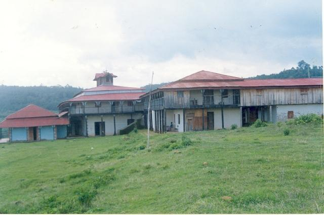

Abba Jifar Palace
Before being incorporated into the central Christian Empire of Ethiopia, Jimma was one and the strongest of the five autonomous Gibe kingdoms of the Oromo people under the leadership of Abba Jifar Abba Gomal, best known as king Abba Jifar also known by his Islamic name (Sultan Muhammad Dawud Ibn Ibrahim) of Jimma
Read More